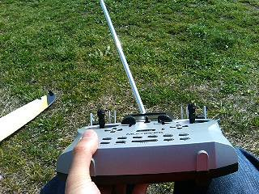
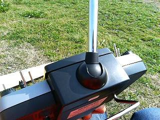
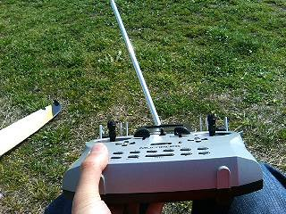
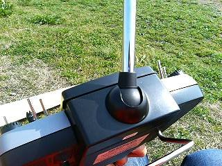
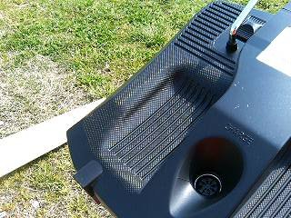
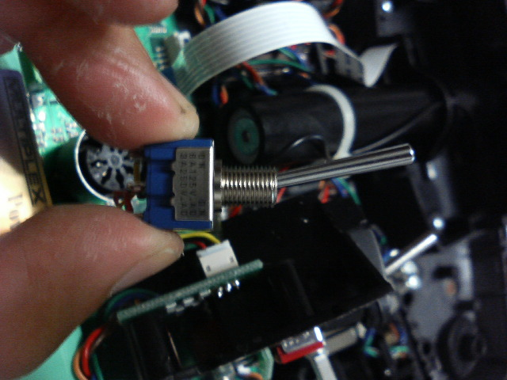
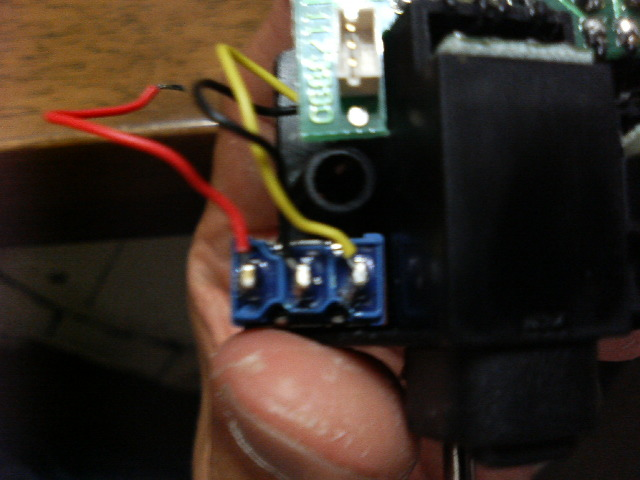
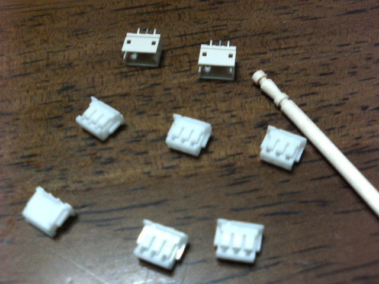
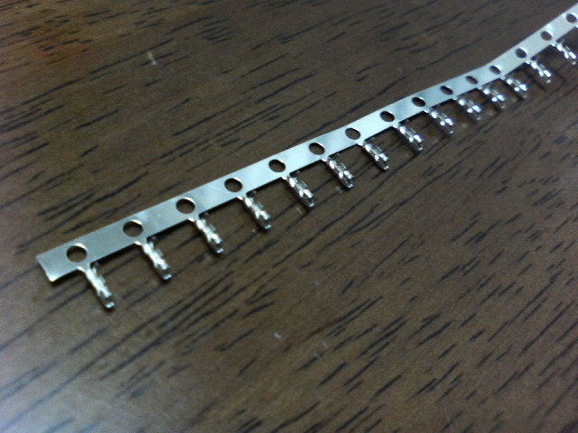
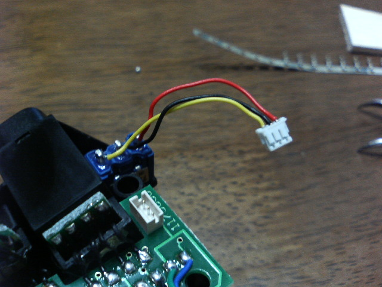

HLGをしばらくやっていて、新しいプロポが欲しくなってきたときに、いろいろ物色していて見つけたのが、
ドイツのMultiplex社から出ている、Royal Evoとシリーズのプロポ。USの一部の人たちがかなり盛り上がっていて、
情報がたくさんあり、読んでいた僕にも感染してしまって、思い切って買ってしまいました。
HLGをしばらくやっていて、新しいプロポが欲しくなってきたときに、いろいろ物色していて見つけたのが、
ドイツのMultiplex社から出ている、Royal Evoとシリーズのプロポ。USの一部の人たちがかなり盛り上がっていて、
情報がたくさんあり、読んでいた僕にも感染してしまって、思い切って買ってしまいました。日本にあまり情報がないなーということで、出せる情報は出して行くべきだと思って、こんなのを作ってみました。
HLGをしばらくやっていて、新しいプロポが欲しくなってきたときに、いろいろ物色していて見つけたのが、
ドイツのMultiplex社から出ている、Royal Evoとシリーズのプロポ。USの一部の人たちがかなり盛り上がっていて、
情報がたくさんあり、読んでいた僕にも感染してしまって、思い切って買ってしまいました。
日本にあまり情報がないなーということで、出せる情報は出して行くべきだと思って、こんなのを作ってみました。
僕の知る限りではまだ数台しか入っていないみたいですが、ぜひ、皆さん使ってみてください。
僕は、USのTower Hobbyで買いました。
ドイツのMultiplex社から出ている、ラジコンのプロポです。基本的に空物用のプロポですが、どちらかというと固定翼機に向いているんじゃないかな。少なくともUSでは特にグライダー屋さんに歓迎されています。ラインナップには、Evo7とEvo9、Evo12があり、それぞれ7・9・12チャンネルの送信機で、同じ筐体に入っていますが、7は9や12とは別のプロポだと思ってもいいくらい根本的な相違があります。買うなら９が１２ですよ。ここでは、Evo9を中心に情報を提供していこうと思っています。


Evoの前面です。まずは、メッキの飾りが無いのが特徴でしょうか。僕はこっちの方が断然好みです。
スティックの部分が「つり目」になってますが、この部分は自分で角度を調整できるようになっています。握ったときの親指の
向きにあわせて調整してあります。45度くらいまで傾けることができます。
レバー/スイッチ類は大きく分けて4種類あります。
まずは左右の上のかどにあるのが、3Dセレクターです。くるくる回して選択してぽちっと押して確定という感じです。FF9に着いているものの
ダイヤル版みたいな感じです。残念ながら、Controlに割り当てられない(下記参照)ので、レバーなどの代わりにすることはできませんが、
ミキサーなどのパラメータをアサインしておくことで、飛行中にそのパラメータを変更することが可能です。今はランチモードのプリセット量
の修正に割り当ててます。
スティックの下の十字に並んだスイッチがトリムです。取説にはCurusiformと書いてありますが十字型っていう感じでしょうか。僕は特に
使いにくいとは思いませんが、使いにくいという意見もあるようです。
下のほうに2列に並んだボタンがプログラミング用のボタン類です。上の段のボタンがそれぞれ機能に割り当てられていて、押すと一発で
機能を呼び出すことができます。下のほうには上下キー・決定キー・クリアキー・3Dセレクターキーの特殊キーが並んでいて、プログラミング
中などに使用します。
残りのものが、通常の操作に使うレバー/スイッチです。特徴的なのは、横についているスイッチとボタンでしょうか。握ったとき、ちょうど
人差し指で操作しやすいところにあります。僕は左側のスイッチで飛行モードの切り替えをして、ボタンを押している間だけランチモードになる
ようにしています。ランチモードをONにすると、ラダーを右に切って、エレベータを少しアップにするようにしてあります。ランチ後に横滑りが
収まったところで、離します。コンマ何秒かの間です。
スティックの間にある、スライドスイッチは、日本のプロポの中級機以上のものに見ついている、サイドのレバーと同じ働きをするものです。
真中でクリックするようになっています。トリムではありません。
 



アンテナは、こんな風に手前に倒して使うこともできます。まっすぐな位置か、倒した位置のどちらかで固定されるようになっているので、
ボールジョイントのように、SAL中に動いてしまって厄介だというようなことはありませんが、好きな位置に固定するということもできません。
僕は、手前に倒した位置で使ってます。

筐体の裏側はこんな風にえぐれていてグリップ状になっています。表面には滑り止めのパターンがモールドされています。持った感じは
上の写真でわかるように、薄さも手伝って、非常に良好です。SALで走り回っても大丈夫。
裏側の真中あたりに見えるのが入出力ジャックです。7ピンのジャックで、充電やPC接続ケーブル/トレーナーケーブルを挿すのですが、こんなところにあると、
充電中やPCとの接続中に立てておかなくてはならなくて、前に倒れないように気をつけなければならないので、ちょっと不満です。
で、「何でEvoなの？」という人もいると思います。そのあたりは、次の2.で。
僕がEvoを選んだ理由は次の点によるところが大きいです。(これまでRD6000Superしか使ったことが無いので、「他の日本のプロポでもできるよ」というような内容も含んでるかもしれません。)
今の飛ばしてるHLGはサーボを4つしか使っていないのに、6chの受信機が必要なのは納得いかなかったけれども、これで解決。今は 1-エルロン左 2-エルロン右 3-エレベータ 4-ラダー とつないでいます。電源は、エレベータと共用。 そのうちやってみたいと思っている、4サーボウィング=フラップ独立も6chの受信機で実現できます。
これは、次のミキサーの仕組みと密接に絡んでますが、かなり自由に設定できます。
まあ、日本のプロポも明確なんでしょうが、何かを実現するために「こんな風に”工夫”すればOK」、のような、ある種のトリックを使う必要が少ないです。これは、スティックと受信機のコネクターを切り離して、従来ある(日本のプロポの)「ミキサー」とは別の「ミキサー」を作り上げてあるということです。くわしくは次節で。
バグは無いに越したことはないんですが、まあ、人間の作るものですから。さらに、機能強化されたものがリリースされるという希望ももてます。機能強化については、今のバージョンの1.4が出たときに、USでかなり失望の声が大きかったようにあまり期待はできませんが、夢はあります。
さてさて、いいことばかりではありません。マイナス面もありますよ。 Evoチュートリアルから引用すると、
フライトフェーズ(モード)ごとにExpoが設定できない。
アクロの人のなかにはこれがないとだめな人がいるらしい。
僕にはぜんぜんマイナスではないんですが、
これがないから「Evoなんてだめ」だそうな。
フライトフェーズの名称には決められたものしか設定できない。
メモリごとの保存ができない。メモリの保存は丸ごとする必要があります。
フラップとスポイラーコントロール(後述)には入力によらず一定の値を出力する機能 がついていますが、フラップだけ初期設定で薗値が有効になっています。 USではこの設定はバグだという評価です。僕はそうは思っていませんけど。
ボタンウィジェット(後述)をコントロールに設定すると、モメンタリ(押している間だけON)にしか 設定できない。
フライトフェーズの切り替えには1秒のディレイがかかっていますが、この値は変更できません。
RD6000は買ってすぐにちゃんと動きます(笑)。そりゃそうで、ラダーは左のスティックの左右ときまっていて、受信機のここから信号が出るときまってるんですから。でもEvoは違います。「プログラム」しないと何にもできません。これは、初心者にはきついでしょう。プログラムするには、「どのスティックを動かしたらどの舵面がどのように動いて欲しいか」どうしたいかが明確にわかっている必要があります。
送信機を買い替えた場合など、既存の機体の設定ではうまく動かない場合があります。
2リセットする仕組みに今ひとつ統一性がないので、使いにくいです。
大柄な西欧人向けに作っているためか、スイッチ類がちょっと遠い。
やっぱりどれも致命的な短所にはなってないですね。圧倒的に＋の部分の優位性が大きいので、評価は90点です。。さて次節では、どんな風にプログラムするのかということについて。
さてさてEvoもコンピュータプロポなんで、「プログラムする」のですが、先にも書いたように「プログラムしないと使えない」という特徴があります。
Evoでは指令は下のような流れで指からサーボへ届きます。
指 -> Widget -> Control -> (Mixer) -> サーボ
プログラミングとは、この流れの中の「WidgetとControlの関係」「Mixerの設定」「Mixerの出力をどのサーボにだすかへの設定」を行なうことにあたりまです。加えて、「Mixerの定義」もしないといけません。
まずは、流れの中に出てくるそれぞれの用語を説明することで、Evoのアーキテクチャの概要をつかんでいただけると思います。
Evo本体についている、スイッチ/スライダーなど、下のほうについている押しボタンと3Dアジャスター以外のものを指します。スティックが2本にスライダーが2つ、3ポイントスイッチが2つ、2ポイントスイッチが2つ(オプションでさらに2つ)、押しボタンスイッチが2つ、これだけあります。 これを操作して、Evoに指令を伝えます。
Widgetからの入力は上記のどれかにアサインすることで、次の段のMixerまたはサーボに入力することができるようになります。
コントロールには特別な機能がついています。
１つはトリム。これは説明書のどこにも書いてありませんが、Controlの出口直前にトリムが作用すると考えるのが自然です。ミキサーへの出力にトリムを含めるか含めないかを選択できます。
エルロンディファレンシャルもコントロールについている機能と考えるとすっきりします。エルロンの左右の並びを判断しているんですが、これについての詳しいことは後ほど。
エルロン-ラダーミキシング(コンビスイッチと読んでます)。これも後で詳しく説明します。
フラップとスポイラーには固定値を割り当てる機能があります。
ミキサーは、5入力-多出力の箱と考えることができます。最大５つまでのControlからの入力を合成してサーボに送ります。それぞれの入力に対して量や方向などを設定することができます。真のミキサーだという感じですよね。
ミキサーの定義と設定は別々にするようになっていて、定義のほうはグローバルな設定になっていて、すべてのモデルで共有しています。定義に設定するのは、「入力コントロールの種別」「ミキサースイッチ」「入力方式」で、設定時には、「動作量」を決定します。
指令の流れの中で、ミキサーを省略することもできます。この場合、コントロールからの出力は直接サーボに届くことになります。
エルロンに複数のサーボ割り当てて使う場合、左右のサーボは逆に動いているわけですが、
まったく逆の動作をしているわけではありません。エルロンディファレンシャルを使うからです。
ディファレンシャルというのは、エルロンの動作を上下で違う寮にする機能なので、たとえば右に切った場合、右用の出力と左用出力
では動作量が違うということになるのです。
これを実現するためには、右用と左用の別のミキサーを定義してそれぞれにサーボを
割り当てるという手もあるのではないかと思うのですが、そうした場合、右用のミキサーと左用のミキサーの
調整が煩雑になってしまうことが考えられます。
そこでMpxは、そのようなことからユーザーを解放するために、
１番のサーボから順に見て、Mixer経由の物も含めて、最初のエルロンControlの出力を左、 次を右、以降順番にという規則を採用し、実際に送信機から出力されるエルロンの信号をその規則にあわせて変更するという方式を採用したのです。
この規則は、始めから理解して使えば引っかかったりしないのですが、落とし穴になることがあります。
例えば、ラダー用ミキサーにエルロンの入力があって、サーボが エルロン１、ラダー、エレベータ、エルロン２の順に接続してある場合、間のラダーへ出力が右用になってしまうため、両方のエルロンが左用の動きをしてしまいます。サーボにリバースをかければうまくいきそうですが、ディファレンシャルがうまく働きません。
これは、既存の機体の送信機を他のものからEvoに変更したときに問題になる場合があります。そんなときには、受信機とサーボとの接続を変更するなどの対処必要が出てしまいます。
また、そうでなくても、今までのとおりのつもりで接続してしまうとエルロンディファレンシャルの調整がうまくできずにはまってしまうかもしれません。
この規則をとった場合に問題になるのは、エルロンディファレンシャル(A-Diff)とエルロン－ラダー(A-R)ミキシングの実現です。A-Diffは、実際にミキサーをサーボに接続するまで左右が決まらないため、装置としての特殊なサポートがない場合、設定の手順が特殊なものになってしまいます。また、A-Rミキシングはエルロンの出力を1つしか使用しないため、落とし穴の節であげたような問題を起こしやすいのです。
この問題の解としてMpxが用意したのが、特別なミキサー、Air-DiffとCombiSwitchです。
Air-Diffは、他のミキサーとは独立して、左右のシーケンスに沿って適切にディファレンシャル処理を行なうようになっています。また、CombiSwitchは、左右のシーケンスに影響を与えずに、A-Rミキシングを実現します。
実際のところ、この2つは、ミキサーに分類されてはいますが、Controlのもっている機能だと考えるべきなのではないかとおもいます。その証拠に、ミキサーへエルロンコントロールの入力をするときに トリムを除外(-Tr指定)すると、ディファレンシャルの影響もなくなります。
これらの要請から、下記のようにスティックを動かしたときに動翼がどのように動くのかを考えます。
| スティック | 舵面の動き |
|---|---|
| エルロンスティック | エルロンが動く ラダーが動く |
| ラダースティック | ラダーが動く |
| エレベータスティック | エレベータが動く |
| ブレーキスティック (右スティック上下) |
エルロンが動く エレベータが動く |
| フラップレバー | エルロンが動く エレベータが動く |
| フェーズスイッチ | エルロンが動く エレベータが動く |
| ランチモードスイッチ | エレベータが動く ラダーが動く |
これを、舵面ごとに整理すると、
| 舵面 | スティック |
|---|---|
| エルロン | エルロンスティック
ブレーキスティック フラップレバー フェーズスイッチ |
| ラダー | ラダースティック
エルロンスティック ランチモードスイッチ |
| エレベータ | エレベータスティック
ブレーキスティック フラップレバー フェーズスイッチ ランチモードスイッチ |
ということになり、Evoのミキサーの定義ができあがりました。
プログラミングは、取説にもあるとおり、
テンプレートを選択して新しいモデルを作成します。テンプレートは、デフォルトで入っている設定例です。物によってはこのまま使うこともできるのですが、今回は最終的にはすべての設定を変えてしまいます。そんなわけで、ここでは何を選んでもいいのですが、ディスプレーに出てくる絵はグライダーであった方がいいので、GRIDERを選択しておきます。
ここでは、レバーなどをどういう機能に割り当てるかを決定します。
| 左スティック | 上下 | エレベータ |
| 左右 | ラダー | |
| 右スティック | 上下 | (何もアサインされない) |
| 左右 | エルロン |
しかし、モードを選んでも、いわゆるエンコンの場所には何もアサインされません。この部分は次のステップで。
| 左スティック(上下) | ブレーキ |
| スライダーＥ | スポイラー |
| スイッチＨ | フェーズ |
| スイッチＭ | トウリリース |
以上です。
- スライダーは「スポイラーコントロール」に割り当てました。計画では「フラップレバー」 になっていたものです。Ａｕｘにしておいた方が混乱しなかったかもしれません。
- トウリリースを設定してあります。これは、ランチモード用です。今のところ、これをエレベータの ミキサーにくわえて、ランチ時のトリムを調整するのに使う予定です。
- フェーズを有効にしたとたんにアラームがなることがあります。これは、 未定義のフェーズになっていることを示しています。これは、新しいモデルを作って 最初にフェーズを有効にしたときによく起こります。まずは、設定したスイッチを 中立にしてみてください。あとで、フェーズを有効にするまで他のフェーズに切り替えると アラームが鳴ります。
ここでは、フラップをどこにもアサインしていません。これには理由があります。 今回のフラップの位置は、基本的にフェーズによって固定なので、スティックなどの入力を必要としないので、割り当てる必要がないのです。 フラップコントロールは、入力によらず一定の値を出力することができるようになっていて、その値をフェーズごとに設定できるようになっています。この機能を使うことにしました。
| ミキサー名 | 入力コントロール名 |
|---|---|
| DLG-Ail (エルロン用) | |
| - エルロン | |
| - フラップ | |
| - スポイラー | |
| - ブレーキ | |
| DLG-Rud (ラダー用) | |
| - ラダー | |
| - トウリリース | |
| DLG-Elv (エレベータ用) | |
| - エレベータ | |
| - フラップ | |
| - スポイラー | |
| - トウリリース | |
| - ブレーキ |
 エルロン用ミキサー
エルロン用ミキサー
 ラダー用ミキサー(4.2.3.1の設定の後の画像です。)
ラダー用ミキサー(4.2.3.1の設定の後の画像です。)
 エレベーター用ミキサー
エレベーター用ミキサー
Mix1とかMix2とかあるのはミキサースイッチです。これらの説明はそのうち。
| サーボ１ | DLG-Ail |
| サーボ２ | DLG-Ail |
| サーボ３ | DLG-Rud |
| サーボ４ | DLG-Elv |


これは、ブレーキをかけたときに、エルロンのレスポンスがなくなるのを補う設定です。Ail-DffでSPOILERを設定するのと目的は同じですが、エルロンの動作を補償するのではなく、ラダーの動作を増やすという対処です。 これは、MIX-?スイッチをブレーキスティックに割り当てて、ブレーキをかけたときだけエルロンコントロールからラダーにミキシングを有効にすることで実現します。
| DLG-Rud (ラダー用) | |
|---|---|
| <- ラダースティック | |
| <- エルロンスティック -Tr (新規追加) | |
| <- ランチモードスイッチ |
| ★必要材料 | 全部秋葉原界隈で調達です。 | |
|---|---|---|
| MAX232互換チップ ADM3202AN | 200円 | TTLレベルの信号をRS232Cレベルに変換してくれるチップで、DC-DCインバータを 内蔵していて、3.3Vの電源のみで動作します。周辺に必要なコンデンサーも パックされています。コンデンサーのいらないバージョンもありますが、600円くらいします。 |
| レギュレータ TA485F | 100円 | Evoからの7.2Vを5Vに落とします。チップ自体は3.3V仕様なので、 3.3VのレギュレータでもOKでしょう。電流は、それほど流れないはずなんで、 0.5Aあれば十分かと。(根拠なしですが) |
| ユニバーサル基盤 | 150円 | 一番小さいのをかって、半分にカットして使ってます。 |
| RS232C メスコネクター | 80円 | 秋月電子で。 |
| RS232Cのコネクターカバー | 100円 | これも秋月電子で。 |
| DIN 7ピンコネクター | 250円くらい | 置いているところが少ないのですが、ガード下で2件見つけました。 |
| ケーブル お好きな長さ | 1m 100円くらい | オヤイデさんでシールド線買っちゃいました。中にケーブルが4本通っていればOKです。 また、232Cの規格上、全体を1m以下にするのが適当です。 |
道具は普通の電子工作の道具でOK. 半田ごてとかニッパーとか錫メッキ線とか。
後は図面を見て作るだけです。出来上がりがこんな感じ。


あまり人に見せられたようなできじゃないですが。このあと、基盤部分はシュリンクチューブをかぶせました。
ちなみにちゃんとエッチングしたいなら、どこかにパターンが落ちてました。
スイッチPとKは、サイドのスイッチのある場所のすぐ近くにあるはずなのですが、オプションになっていて、メクラ蓋がされています。 当然純正のスイッチがありますが、今のところ輸入しなければなりません。面倒だし、スイッチはそのままでもあまるほどあるんでいらないかなと 思っていたんですが、大きな筐体のせいでそのほかのスイッチは操作しにくく、PとKの位置にスイッチがあったら、タイマーのON/OFFとかに 便利かもしれないと思って、これまた試してみました。


ここに必要なのは、3極のON-ONスイッチです。秋葉原で手にはいる普通の小型の
スイッチならOKなのですが、売っているのはレバーの長さが短いものがばかりです。
1箇所だけ売っているところを見つけました。ガード下の２階です。
2005/10/13追記 長いスイッチは、ご覧のように他のスイッチと同じ長さで見栄えはいいのですが、
なんとなく邪魔です。短いスイッチを買ってきて、右だけ付け替えてみました。こちらのほうがいい感じなので、
両方これにしようかな？と思っています。
これが曲者。情報によれば、Voltsのコネクターがぴったりとのことですが、
入手先がわからない。いくつか小さいコネクターを買ってみて試したんですが、
ピッチすら合いません。で、人には見せられないような手を使って接続してあります。
Voltzのコネクターの入手先の情報、知っている方がいたら教えてください。
2005/10/13追記 コネクタ見つけました。JSTというメーカーの、ZHR-3というコネクターでした。



秋葉原・西川電子ねじ部の二階ならバラで売っていますので、1個から買うことができます。適合するピンは、B3B-ZRというもの。
ご覧のとおりかなり小さいので、工作には気合とルーペが必要でした。ピンとケーブルの接続は、本来なら工具を使ってかしめる
のですが、数個あればいいコネクター用に何万円もする工具は買えないので、はんだ付けしました。
手順は取説にあるとおりで問題は無いんですが、メクラ蓋が接着剤でくっつけてあって、
書いてあるとおり表から押すだけでは取れません。裏側から先の細いラジオペンチなどで
接着剤そのものをきっちりつかんでそーっとはがしていくときれいに取れます。
スイッチそのものに特に加工は必要ないのですが、ついているネジやワッシャなどは全てはずす必要があります。
あとはコネクターで、FAQにあるとおりにつなぐだけ。
つなげばいきなり認識して使えるようになります。
で、つけたところの外観はこんな感じ。 「コレ」って書いてあるのがつけたスイッチ、いい感じでしょ。